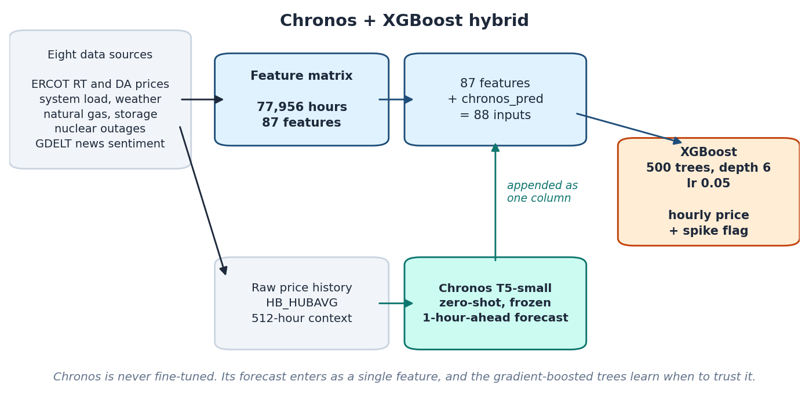
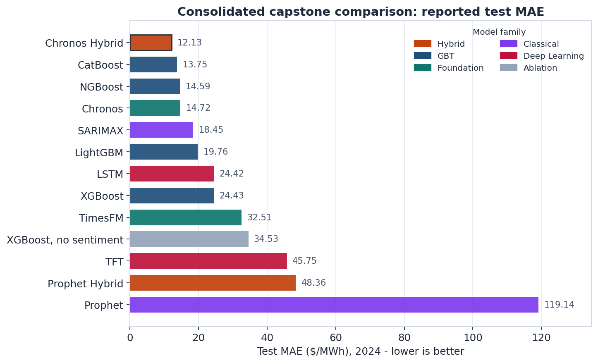
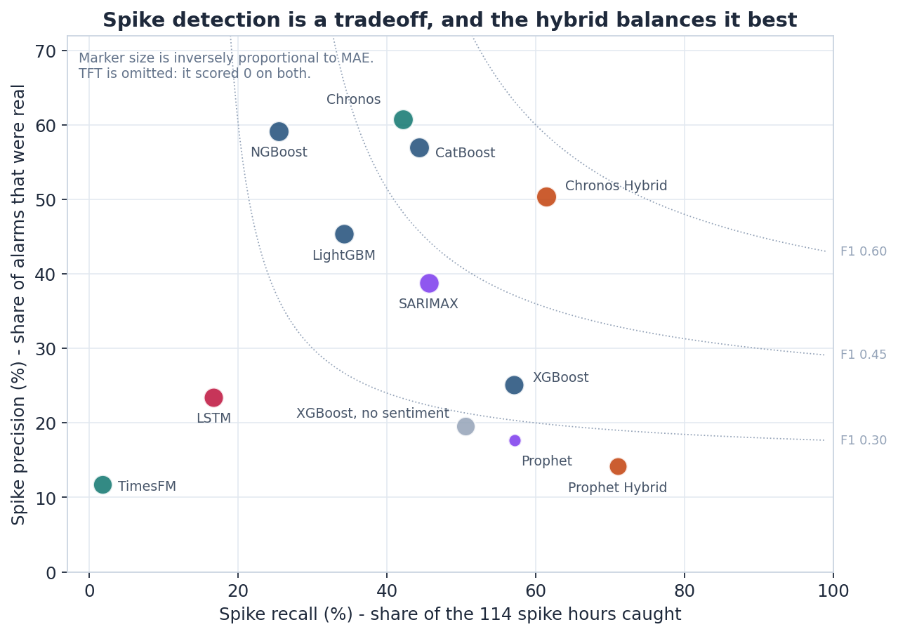
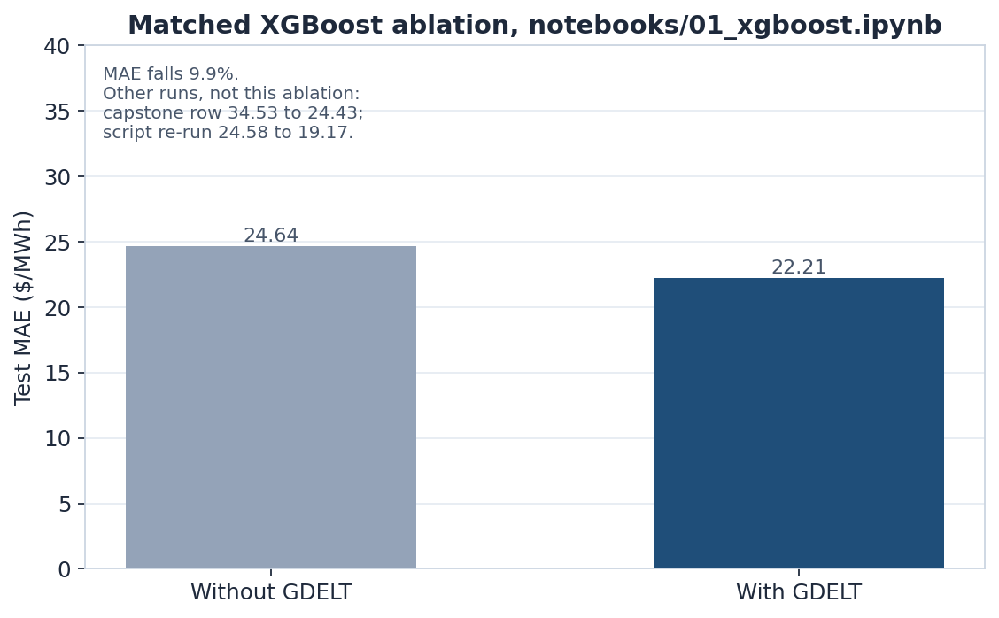
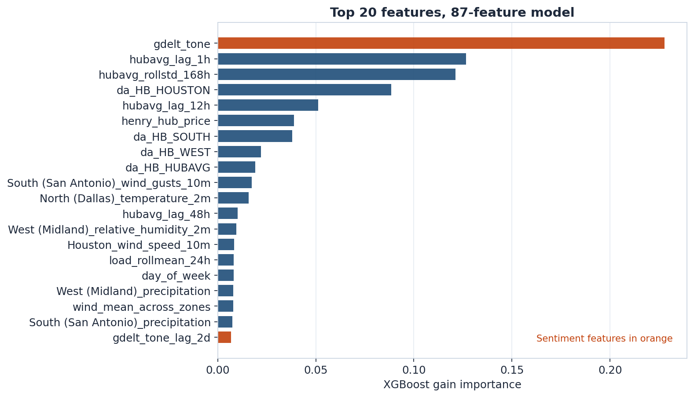
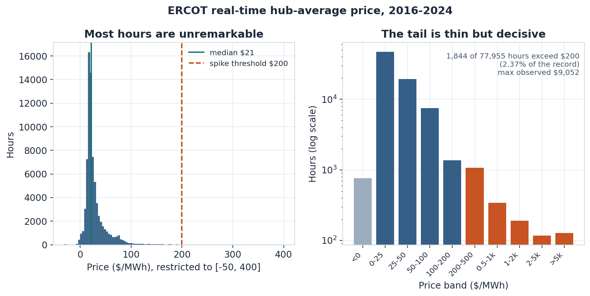

Abstract
Electricity prices in ERCOT, the Texas grid, are strongly heavy-tailed. Most hours trade near a median of about $21/MWh, while a small number of grid-stress hours run toward the $9,000/MWh regulatory cap, and renewable oversupply can push prices negative. The economics of the market are therefore set by rare events rather than by typical conditions.
The executed benchmark is retrospective hourly estimation of the ERCOT real-time hub-average price, together with spike detection above $200/MWh. Same-hour archived market variables and historical reanalysis are present, so these runs are not a point-in-time next-hour forecast. Eight data sources, namely real-time and day-ahead prices, system load, weather across five zones, natural gas prices and storage, nuclear reactor outages, and GDELT news sentiment, are assembled into an hourly matrix of 77,956 observations and 87 engineered features covering 2016 through 2024.
The consolidated project benchmark reports a Chronos forecast passed into XGBoost as the lowest-error configuration, at $12.13/MWh MAE and 61.4% spike recall on the 2024 test year. That table was assembled across experiment versions. The matched GDELT ablation, preserved in the XGBoost notebook, reduces MAE from $24.64 to $22.21 (9.9%). An earlier capstone row of $34.53 versus $24.43 is a different comparison.
Method

The hybrid keeps the two halves of the problem separate. Chronos
(amazon/chronos-t5-small) sees only the raw price series: a 512-hour context
window, from which it forecasts one hour ahead. It is never fine-tuned. That single
forecast is appended to the 87 engineered features as a column named
chronos_pred, and XGBoost trains on the 88-column result, learning
when the univariate forecast deserves trust and when weather, outage, gas, and sentiment
features should override it.
Every model shares one chronological split, with no shuffling: training on 2016 through 2022, validation on 2023, and testing on 2024. The test year contains 8,767 hours, of which 114 exceed the $200/MWh spike threshold.
Results
Reported consolidated capstone comparison on the 2024 test year. Spike metrics use a threshold of $200/MWh. The no-sentiment row is an unmatched historical comparison, not the matched GDELT ablation (MAE 24.64 without GDELT, 22.21 with GDELT).
| Rank | Model | Family | MAE ($/MWh) | RMSE ($/MWh) | Spike recall | Spike precision |
|---|---|---|---|---|---|---|
| 1 | Chronos Hybrid | Hybrid | 12.13 | 93.98 | 61.40% | 50.43% |
| 2 | CatBoost | GBT | 13.75 | 95.48 | 44.35% | 56.94% |
| 3 | NGBoost | GBT | 14.59 | 106.44 | 25.44% | 59.18% |
| 4 | Chronos | Foundation | 14.72 | 115.59 | 42.11% | 60.76% |
| 5 | SARIMAX | Classical | 18.45 | 124.31 | 45.61% | 38.81% |
| 6 | LightGBM | GBT | 19.76 | 100.41 | 34.21% | 45.35% |
| 7 | LSTM | Deep Learning | 24.42 | 148.72 | 16.67% | 23.46% |
| 8 | XGBoost | GBT | 24.43 | 112.46 | 57.02% | 25.10% |
| 9 | TimesFM | Foundation | 32.51 | 136.94 | 1.75% | 11.76% |
| 10 | XGBoost, no sentiment | Ablation | 34.53 | 122.57 | 50.53% | 19.54% |
| 11 | TFT | Deep Learning | 45.75 | 134.60 | 0.00% | 0.00% |
| 12 | Prophet Hybrid | Hybrid | 48.36 | 108.96 | 71.05% | 14.16% |
| 13 | Prophet | Classical | 119.14 | 168.75 | 57.14% | 17.70% |

Reported test MAE from the consolidated capstone comparison, including an unmatched no-sentiment row. Chronos–XGBoost is the lowest reported error in that table.

Spike detection is a tradeoff. Prophet Hybrid catches the most spikes but raises many false alarms; Chronos is precise but misses more; the hybrid balances both.

Matched XGBoost ablation from the saved notebook: MAE 24.64 without GDELT and 22.21 with GDELT, a 9.9% reduction. The capstone pair 34.53 to 24.43 is a different run.

Top 20 features of the 87-feature model. GDELT news tone carries the largest single share of gain importance, ahead of the one-hour price lag.

Nine years of prices. 1,844 of 77,955 hours exceed $200/MWh, about 2.4% of the record, with a maximum of $9,052/MWh.
Key Findings
- The consolidated benchmark reports Chronos–XGBoost as the lowest-error configuration. Chronos contributes a univariate temporal forecast; XGBoost contributes the physical, market, weather, outage, and sentiment context. The reported MAE is $12.13/MWh.
- CatBoost is the strongest standalone model in that same table at $13.75/MWh. The saved CatBoost notebook is a different run (MAE $20.90 on 63 features).
- The matched GDELT ablation lowers MAE and raises precision. Saved notebook output moves MAE from $24.64 to $22.21 and precision from 24.81% to 30.24%, while recall falls from 57.89% to 54.39%.
- The deep sequence models in this comparison miss most spikes. On the consolidated table the LSTM recall is 16.67% and the Temporal Fusion Transformer recall is 0%. Saved notebook outputs differ (LSTM MAE $32.45, TFT MAE $25.61) and still show low spike recall.
- Spike prediction is a tradeoff, not a single score. Recall and precision trade off sharply across models, so the useful question is which operating point a given application needs.
Reproducibility
The repository ships the canonical feature matrix, so a fresh clone can train and evaluate without re-pulling any primary source or holding any API key:
git clone https://github.com/rohanfozdar/Electricity-Price-Forecaster.git
cd Electricity-Price-Forecaster
pip install -e .
python run_full_pipeline.py --stage models
--stage models trains the XGBoost script family. It does not reproduce the
twelve-model table. The matched GDELT ablation is the saved output of
notebooks/01_xgboost.ipynb: MAE $24.64 without GDELT and $22.21 with GDELT.
The capstone pair $34.53 versus $24.43 is a different comparison. A later script re-run
reported MAE $24.58 and $19.17. The Chronos hybrid cells in the notebook were not
executed; models/train_chronos_hybrid.py is the script form and has not
been completed end-to-end here, so $12.13/MWh remains the consolidated reported figure.
BibTeX
@misc{fozdar2026multimodal,
title = {A Multimodal Framework for Electricity Price Forecasting Using
Sentiment-Augmented Time-Series Signals},
author = {Fozdar, Rohan},
year = {2026},
note = {Mathematics Capstone, Knox College},
url = {https://github.com/rohanfozdar/Electricity-Price-Forecaster}
}